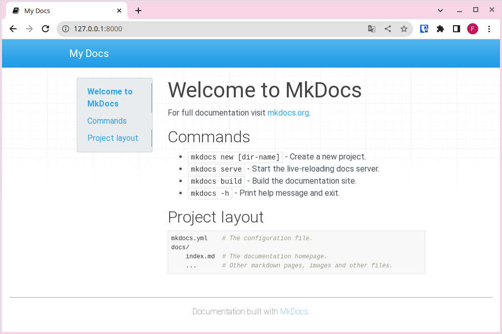

2. Instal·lació
1. Instal·lació d'mkdocs
VSCode
Per a realitzar estos passos, recomanem utilitzar VSCode, ja que ens permet tindre un editor d'arxius i una terminal oberta al mateix programa.
Per a instal·lar mkdocs al nostre ordinador, executarem la següent ordre des de consola (konsole per a Lliurex, PowerShell per a Windows, ...):
pip install mkdocs
Pip
Ja haurieu de tindre pip instal·lat de unitats anteriors, en cas contrari has d'instal·lar python3 i durant la seua instal·lació marcar l'opció d'instal·lar pip i agregar-lo al PATH. Pots descarregar python3 del següent enllaç, https://www.python.org/downloads/.
Una vegada instal·lat mkdocs, haurieu de ser capços d'executar la següent ordre a la consola:
https://www.python.org/downloads/
Obtenint una resposta semblant a la següent:
mkdocs, version 1.3.1 from /home/ferran/.local/lib/python3.10/site-packages/mkdocs (Python 3.10)
2. Creació d'un nou projecte
Una vegada tenim mkdocs instal·lat, necessitem crear un nou projecte per a construir la nostra web. Per tal de començar un nou projecte, executem:
mkdocs new "nom del projecte"
3. Estructura del projecte
Al crear un nou projecte, amb mkdocs, observareu que s'ha creat una estructura com la següent:
.
├── docs
│ └── index.md
└── mkdocs.yml
- L'arxiu mkdocs.yml és l'arxiu de configuració de tot el projecte.
- La carpeta docs contindrà els nostres documents en format markdown.
- L'arxiu index.md és un arxiu de mostra que es mostrarà en format web al accedir a l'arrel del lloc web.
Si et fixes, per una banda tindrem el contingut en markdown i per altra la configuració de com renderitzar aquest contingut.
Carpeta docs
Encara que per defecte els arxius en format markdown estan a la carpeta docs, anem a canviar esta configuració en apartats posteriors.
4. Servim la web en local
Per a servir una web, necessitaríem un servidor web que ens allotjara la nostra web per tal de poder accedir de forma local o remota a través del navegador. mkdocs ens facilita aquesta tasca creant un servidor al nostre ordinador per tal que pugam previsualitzar els canvis abans de servir-ho en un servidor públic (accessible a través d'internet) o construir la nostra web per a publicar-la.
Per a servir la nostra web, simplement hau d'executar el següent comandament:
$ mkdocs serve
INFO - Building documentation...
INFO - Cleaning site directory
INFO - Documentation built in 0.06 seconds
INFO - [12:49:32] Watching paths for changes: 'docs', 'mkdocs.yml'
INFO - [12:49:32] Serving on http://127.0.0.1:8000/
Ara accedirem a l'URL http://127.0.0.1:8000/ i podrem veure la pàgina web per defecte:

Index per defecte
Obriu al VSCode l'arxiu index.md i fixeu-vos com es correspon amb el que esteu veient a la web local. És a dir, s'està renderitzant el markdown en format web.
Ara podeu introduir els canvis que desitgeu al vostre contingut, i en guardar, els canvis es reflectiran automàticament al navegador, sempre i quan, l'ordre mkdocs serve continue en execució. La autorecàrrega es produeix sempre que modifiquem l'arxiu de configuració, el contingut dels arxius markdown o els arxius del tema.